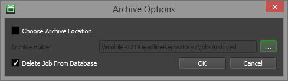
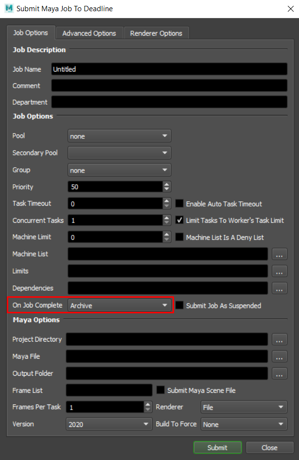
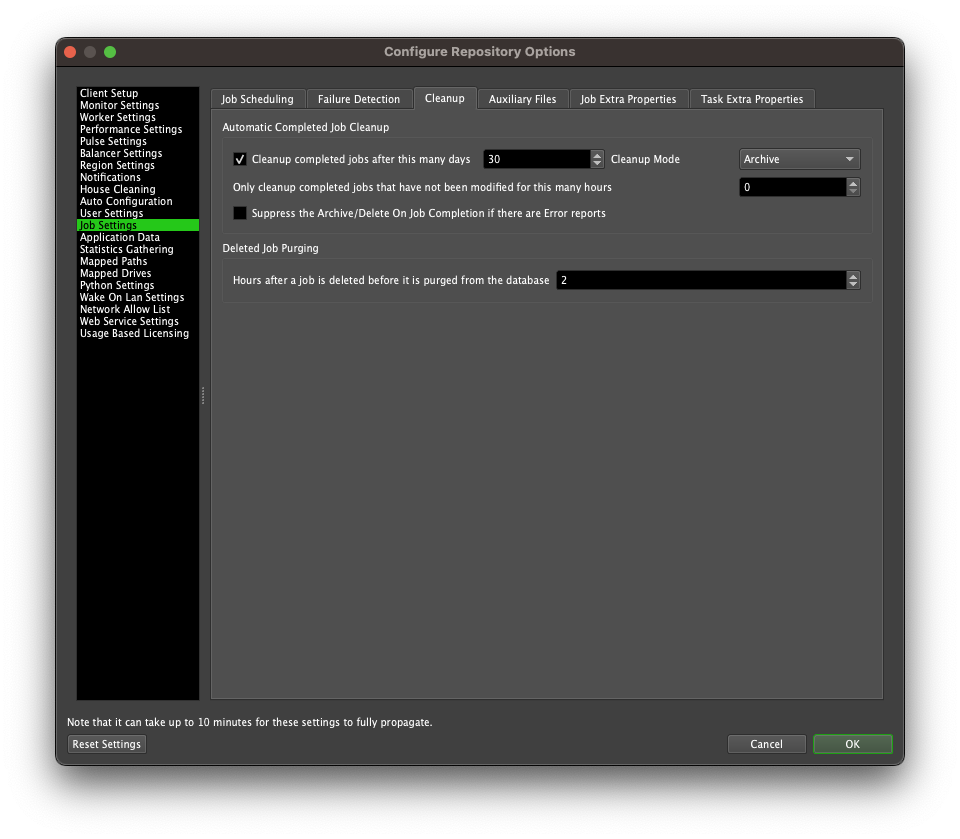

Archiving Jobs¶
Overview¶
Deadline allows you to archive jobs, which is useful if you want to keep a backup of every job you’ve rendered, or if you want to remove a job from one farm and place it in another. It can also be used to give a problematic job to Deadline Support for testing purposes.
Jobs can be archived automatically or manually. When a job is archived, its job and task information are exported as JSON to separate text files. These files are placed in a zip file with any auxiliary files that were submitted with the job, and any reports the job currently has. The name of the zip file will contain the job’s user, plugin, name, and ID (to guarantee uniqueness). It will have the following format:
USER__PLUGIN__JOBNAME__JOBID.zip
Typically, this zip file is placed in the jobsArchived folder in the Repository. However, when manually archiving a job, you have the option to choose an alternative archive location.
Manual Job Archiving¶
Users can manually archive a job by right-clicking on it in the job list in the Monitor and selecting Archive Job. This will bring up the following window:
By default, it will save the archive to the jobsArchived folder in the Repository. However, you can choose a different folder to archive the job. You can also choose whether or not to delete the job from the database after archiving it. Once case where you might not want to delete it is if you are archiving a job to send to Deadline Support for testing purposes.
If the Job panel is not visible, see the Panel Features documentation for instructions on how to create new panels in the Monitor.
Automatic Job Archiving¶
When submitting a job, users can set the On Job Complete setting to Archive. When the job finishes, it will automatically be archived to the jobsArchived folder in the Repository.
Administrators can also configure Deadline to automatically archive all jobs after they have finished rendering and place them in the jobsArchived folder in the Repository. This can be done in the Job Settings section of the Repository Options.

{kind=link}
{kind=link}
{kind=link}